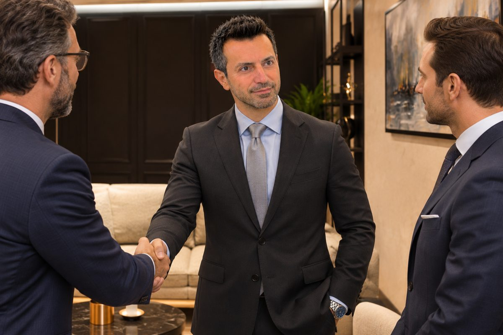

KGF kefaletli kredi: teminatınız yetmese de kredi almak mümkün (İzmir işletmeleri için 2026 rehberi)
İşinizi büyütmek, stok almak ya da makine yenilemek istiyorsunuz ama banka "teminatınız yetersiz" diyor. Bu durumda en çok kullanılan çözüm Kredi Garanti Fonu (KGF) kefaleti. Karşıyaka'daki ofisimizde mali müşavir olarak KGF başvurusu hazırlayan pek çok İzmir işletmesiyle çalışıyoruz; bu yazıda sistemin nasıl işlediğini ve başvurudan önce nelere dikkat etmeniz gerektiğini anlatıyoruz.

KGF nedir, nasıl çalışır?
KGF, krediyi kendisi vermez; bankanın vereceği kredi için işletmeye kefil olur. Kefalet genellikle kredinin yüzde 80 ile yüzde 90'ı arasındaki kısmı kapsar, bazı programlarda bu oran yüzde 100'e kadar çıkabilir. Böylece banka sizden daha az teminat ister. Başvuru doğrudan KGF'ye değil, KGF ile anlaşmalı bankanız üzerinden yapılır.
2026'da hangi KGF paketleri var?
KGF'nin internet sitesinde 2026 itibarıyla iki ana grup yer alıyor:
- Özkaynak kefaletleri: TOBB Nefes Kredisi 2026 Destek Programı, KGF Genel Destek, Dijital Kefalet, Tarım Kefalet, KGF Kooperatif, KGF Özkaynak Kefalet Programı ve bankaların kadın ve genç girişimcilere yönelik programları.
- Hazine destekli paketler: Yatırım-İşletme, İhracat, Turizm, Dijital Dönüşüm ve benzeri programlar.
Her paketin üst limiti, vadesi, kefalet oranı ve son başvuru tarihi farklı. Birçok paketin başvuru süresi 31 Aralık 2026'da doluyor, bazılarının ise daha erken. Güncel tutarları başvuru sırasında bankanızdan ve kgf.com.tr'den teyit etmek gerekiyor.
Başvuru şartları
- Vadesi geçmiş vergi ve SGK borcunuz olmamalı ya da yapılandırmanız bozulmamış olmalı. Bazı programlarda belgelenmiş borç, kredinin küçük bir kısmıyla kredi kullanılmadan önce kapatılabiliyor.
- İflas veya konkordato kaydı olmamalı.
- Banka, işletmenizin kredi değerliliğini kendi kurallarına göre ayrıca inceler.
- Kredi, programın amacına (işletme ihtiyacı, yatırım, ihracat vb.) uygun kullanılmalı.
Maliyet
Faiz oranını banka belirler. Bunun yanında KGF kefalet tutarı üzerinden küçük bir kefalet komisyonu, banka da kredi tutarı üzerinden komisyon alabiliyor. Teklifleri karşılaştırırken yalnızca faize değil, toplam maliyete bakın.
Başvurudan önce mali müşavirinizle yapmanız gerekenler
- Vergi ve SGK borç durumunuzu kontrol edin; gerekiyorsa yapılandırma veya ödeme planını netleştirin.
- Son dönem beyannameleri, bilanço ve gelir tablosunu güncel ve tutarlı hale getirin; bankalar mali tablolara bakar.
- Kredi ihtiyacınızı amacına göre belirleyin (işletme sermayesi mi, yatırım mı, ihracat mı) ve uygun paketi seçin.
- Birden fazla bankadan teklif alın.
- Son başvuru tarihlerini kaçırmamak için yıl sonundan önce harekete geçin.
Bu konuda yanınızdayız
SMMM Serkan Kaplan olarak Karşıyaka'daki ofisimizden İzmir'deki işletmelerin KGF ve banka kredisi başvurularında mali tablolarını hazırlıyor, vergi ve SGK durumunu temize çekiyor ve en uygun paketi birlikte belirliyoruz.
0532 515 50 35Hemen arayın veya WhatsApp'tan yazın, ön görüşme ücretsiz.
Kaynaklar: Kredi Garanti Fonu · Müşavirler Kulübü, KGF 2026 rehberi · Garanti BBVA KGF sayfası. Bu yazı genel bilgilendirme amaçlıdır; kendi durumunuz için bizimle görüşün.